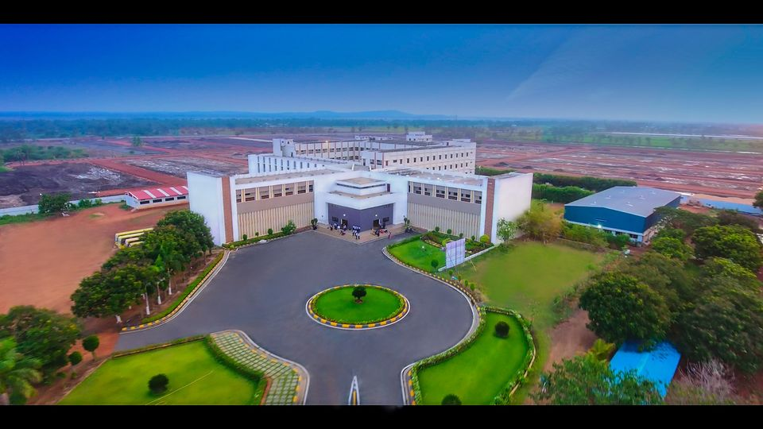
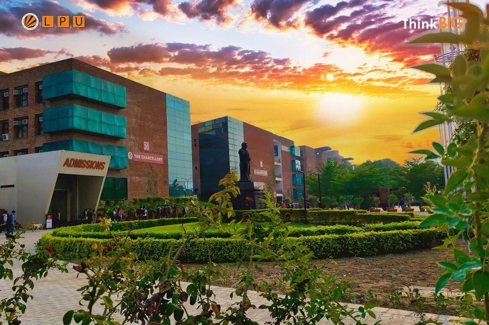

My Qualifications
Diploma in Computer Science Engineering
I completed my Diploma in Computer Science Engineering at Geethanjali Institution of Science and Technology in 2024. During my two-year program, I gained a solid foundation in various computer science concepts. I delved into programming languages like C, C++, Java, Python, HTML, CSS, and JavaScript. I also explored fundamental topics such as digital electronics, data structures, operating systems, and computer networks. My experience at Geethanjali Institution was enriching, and I am proud to have achieved a 70% score. I actively participated in workshops organized by the Andhra Pradesh State Skill Development Corporation (APSSDC), focusing on Python and Buildbox. These workshops enhanced my practical skills and broadened my understanding of emerging technologies.
B.Tech in Computer Science Engineering
Currently, I am pursuing my B.Tech in Computer Science Engineering at Lovely Professional University. Since joining the program in 2024, I have been actively involved in various extracurricular activities to complement my academic pursuits. I have participated in hackathons organized by AIESEC and AIREV, where I collaborated with talented individuals to solve real-world problems using technology. Additionally, I served as a coordinator for the Smart India Hackathon, a national initiative that fosters innovation and problem-solving among students. Beyond my academic and extracurricular commitments, I have also taken up swimming and boxing as extra-curricular activities. These activities not only help me stay physically fit but also teach me discipline, perseverance, and the importance of setting goals and working towards them. As I continue my B.Tech journey, I am eager to explore new areas of computer science and gain more hands-on experience. I am confident that the knowledge and skills I have acquired thus far will serve as a strong foundation for a successful career in the field of technology.